Historical lesson/review. Use the complete textbook course for the current study order. Former Chapters 4 and 5 are now Appendixes A and B.
历史课程／复习材料。当前学习顺序请使用完整教材课程。原第四、五章现为附录 A、B。
Start at a bubble's maximum radius Rmax, where its wall is momentarily at rest. For this benchmark, assume a spherical cavity in an infinite incompressible liquid, a constant ambient pressure p∞, and a constant vapor pressure pv. Neglect noncondensable gas, surface tension, viscosity, acoustic radiation, and nearby walls. The inward pressure gap is positive:
从气泡达到最大半径 Rmax、壁面瞬时静止的时刻开始。为建立这一基准模型，假设空腔保持球形，位于无限延伸的不可压缩液体中；环境压力 p∞ 和蒸气压 pv 均保持恒定。忽略不凝性气体、表面张力、黏性、声辐射及邻近壁面。向内的压力差为正：
Δp = p∞ − pv > 0
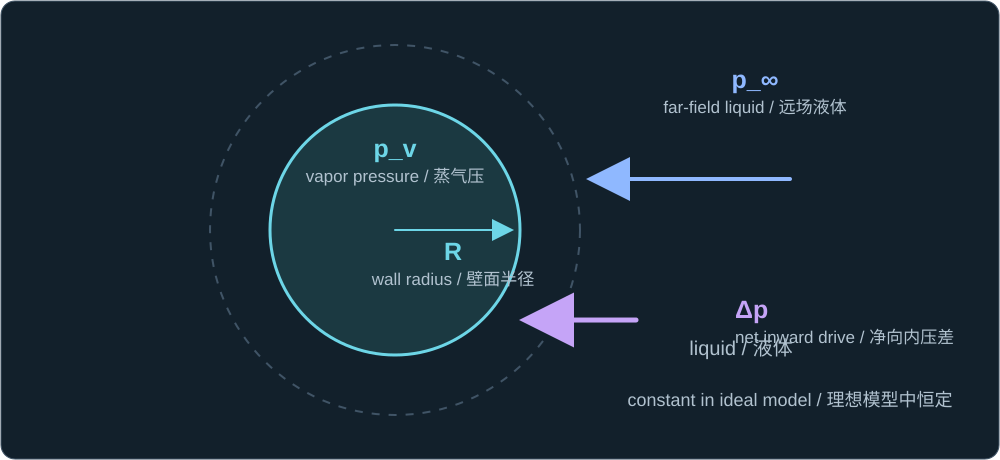
Ambient liquid pressure p_∞ acts inward against interior vapor pressure p_v; their constant difference is the ideal drive Δp.
环境液体压力 p_∞ 向内作用，与泡内蒸气压 p_v 相抗；两者的恒定差值是理想驱动力 Δp。
Why omit noncondensable gas? The simple Rayleigh formula needs a constant inward pressure gap. A fixed amount of gas instead becomes compressed as R falls. Under the Lesson 6 polytropic law:
为什么忽略不凝性气体？简单的 Rayleigh 公式要求向内的压力差恒定。若泡内保留固定量的气体，R 减小时气体会受压。按照第六课的多方规律：
pg(R) = pg,max(Rmax/R)3κ
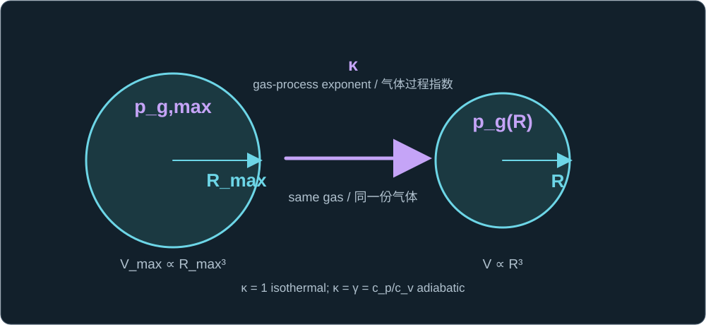
Starting at R_max with gas pressure p_g,max, compression to R raises p_g(R) according to the assumed exponent κ.
从最大半径 R_max 及其气体分压 p_g,max 出发，收缩到 R 会按照假定的指数 κ 提高气体分压 p_g(R)。
Its rising pressure reduces the inward drive and may eventually cause rebound. Neglecting gas isolates the liquid-inertia benchmark; it is not a rule for all cavitation bubbles.
不断升高的气体压力会减小向内驱动力，并可能最终使气泡回弹。忽略气体是为了单独研究液体惯性的基准问题，并非所有空化气泡都必须这样处理。
Δpnet(R) = p∞ − pv − pg(R)
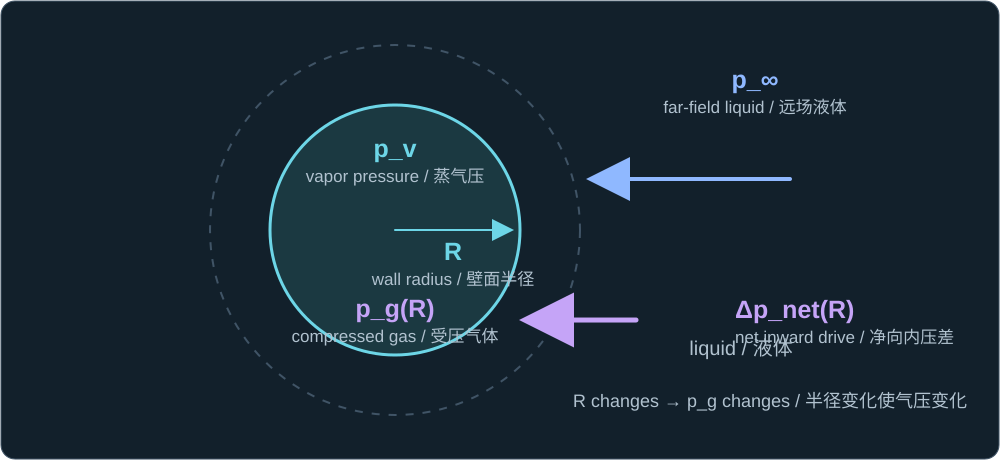
Noncondensable gas p_g(R) and vapor p_v oppose ambient p_∞; the remaining inward drive Δp_net(R) changes with radius R.
不凝性气体 p_g(R) 和蒸气压 p_v 抵抗环境压力 p_∞；余下的向内驱动力 Δp_net(R) 随半径 R 变化。
Pressure drives; liquid inertia delays
压力驱动塌缩，液体惯性决定耗时
With those assumptions, Rayleigh–Plesset reduces to an equation with a constant inward pressure drive. At the start, Ṙ = 0, so the initial wall acceleration is inward. As the cavity shrinks, pressure work becomes liquid kinetic energy and the inward wall speed rises.
在上述假设下，Rayleigh–Plesset 方程化为向内压力驱动力恒定的方程。起始时 Ṙ = 0，因此壁面初始加速度指向内部。随着空腔缩小，压力所做的功转化为液体动能，壁面向内的速度逐渐增大。
R R̈ + (3/2)Ṙ² = −Δp/ρ
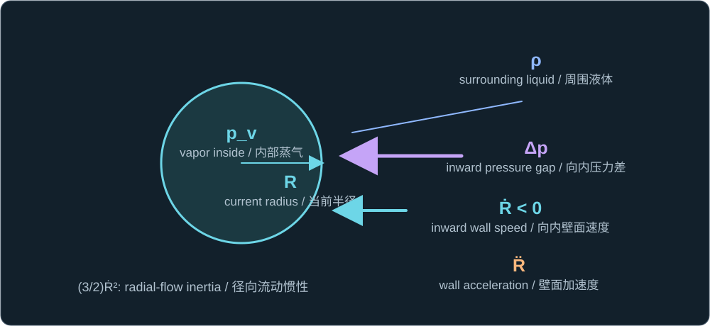
For radius R in liquid density ρ, inward gap Δp drives the wall speed Ṙ and acceleration R̈ during ideal collapse.
在密度为 ρ 的液体中，向内压差 Δp 驱动半径 R 处壁面的速度 Ṙ 与加速度 R̈。
The collapse-time scale
塌缩时间的尺度
A pressure difference has units of energy per volume. Over a cavity of size Rmax, available pressure work therefore scales as Δp Rmax³. The surrounding liquid's kinetic energy scales as its density times a volume Rmax³ times a characteristic speed squared. If collapse takes time t, that speed is of order Rmax/t. Equating these scales gives the proportional relation, without its numerical coefficient:
压差的单位是单位体积的能量。对于尺度为 Rmax 的空腔，可释放的压力功因此按 Δp Rmax³ 缩放。周围液体的动能按其密度、体积尺度 Rmax³ 与特征速度平方的乘积缩放。若塌缩历时为 t，该速度的量级为 Rmax/t。平衡这两个尺度即可得到比例关系，但尚得不到数值系数：
Δp Rmax³ ∼ ρRmax³(Rmax/t)²
⇒ t ∝ Rmax√(ρ/Δp)
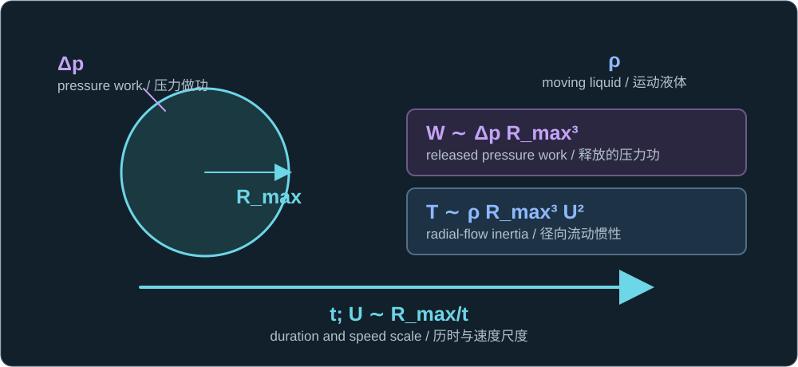
At scale R_max, pressure gap Δp supplies work; liquid density ρ carries kinetic energy with speed scale U≈R_max/t, giving the proportional time scale.
在 R_max 尺度上，压差 Δp 提供压力功；密度为 ρ 的液体以特征速度 U≈R_max/t 携带动能，由此得到时间尺度的比例关系。
Integrate the radial equation
对径向方程积分
Now recover the coefficient from the exact ideal equation above. Multiply it by 4πρR²Ṙ. The left-hand side becomes the time derivative of the surrounding liquid's kinetic energy from Lesson 5; the right-hand side is pressure power as the cavity volume changes:
现在从上面的精确理想方程求出数值系数。将方程两边乘以 4πρR²Ṙ。左边成为第五课所求周围液体动能的时间导数；右边是空腔体积变化时压力所做功的功率：
d[2πρR³Ṙ²]/dt = −Δp · d[(4π/3)R³]/dt
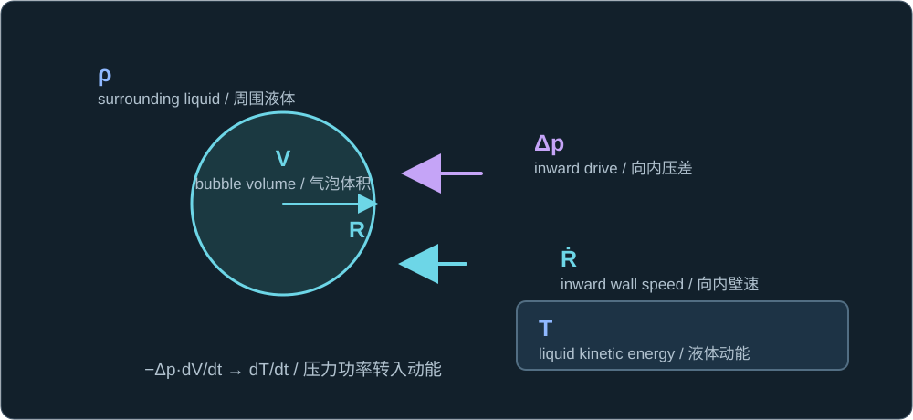
At radius R, pressure gap Δp reduces cavity volume V while wall speed Ṙ transfers power into kinetic energy T of liquid density ρ.
在半径 R 处，压差 Δp 使空腔体积 V 减小；壁面速度 Ṙ 将功率转入密度为 ρ 的液体动能 T。
At the starting maximum radius, the wall is at rest, so its kinetic energy is zero. Integrating from that state to a smaller radius R makes the liquid's kinetic energy equal the pressure work released by the lost cavity volume:
在起始最大半径处，壁面静止，因此液体动能为零。从该状态积分至较小半径 R，可得液体动能等于空腔体积减小所释放的压力功：
2πρR³Ṙ² = (4π/3)Δp(Rmax³ − R³)
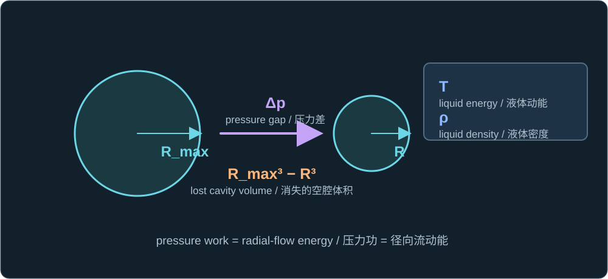
From R_max to R, the lost cavity volume under pressure gap Δp becomes liquid kinetic energy T; ρ identifies the moving liquid.
从 R_max 缩小到 R 时，压差 Δp 对减少的空腔体积做功并转为液体动能 T；ρ 标示被带动的液体。
Solving this equality for wall speed gives two algebraic signs. During collapse, R decreases, so take the negative root:
由这一等式解出壁面速度时，代数上有正负两个根。塌缩期间 R 减小，因此取负根：
Ṙ = −√{[2Δp/(3ρ)] [(Rmax/R)³ − 1]}
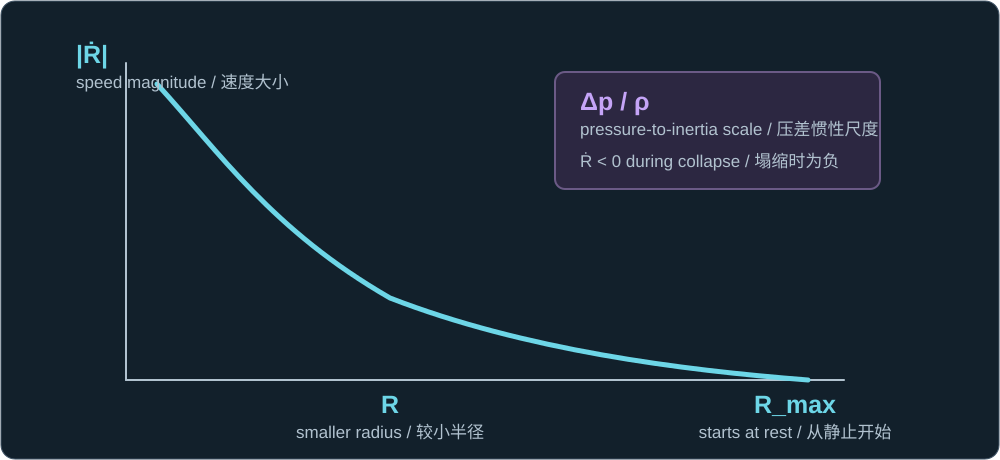
At R_max the wall speed is zero; at smaller R, inward Ṙ has greater magnitude. The ratio Δp/ρ sets the speed scale.
在 R_max 处壁面速度为零；半径 R 较小时，向内的 Ṙ 大小增加。Δp/ρ 决定速度尺度。
To accumulate elapsed time, divide each small decrease in radius by the magnitude of that speed. Let x = R/Rmax, so the starting radius is x = 1 and the ideal zero-radius endpoint is x = 0. The change of variables separates all physical parameters from a dimensionless integral:
要累加历时，就用每一小段半径缩小量除以该处速度的大小。令 x = R/Rmax，则起始半径对应 x = 1，理想的零半径终点对应 x = 0。变量代换使全部物理参数与一个无量纲积分分离：
tc = ∫0RmaxdR/|Ṙ|
= Rmax√[3ρ/(2Δp)] ∫01x3/2/√(1 − x³) dx
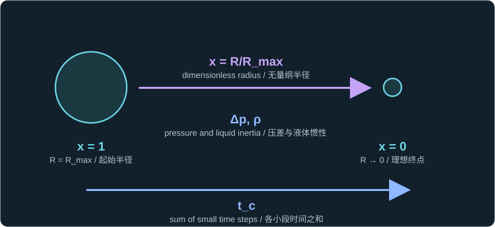
Dimensionless radius x=R/R_max runs from 1 to 0; the time t_c accumulates along that path while R_max, Δp, and ρ set the prefactor.
无量纲半径 x=R/R_max 从 1 变到 0；沿途累加得到 t_c，而 R_max、Δp 和 ρ 决定积分前的系数。
The remaining integral is a pure number. Set z = x³; then dx = (1/3)z−2/3dz. This converts it into a standard beta-function integral. Using B(a,b) = Γ(a)Γ(b)/Γ(a+b) gives:
剩余的积分是一个纯数。令 z = x³，于是 dx = (1/3)z−2/3dz。它由此转为标准的 Beta 函数积分。利用 B(a,b) = Γ(a)Γ(b)/Γ(a+b)，得到：
I = (1/3)∫01z−1/6(1 − z)−1/2dz
= B(5/6, 1/2)/3 = Γ(5/6)Γ(1/2)/[3Γ(4/3)] ≈ 0.7468342;
√(3/2)I ≈ 0.9146814
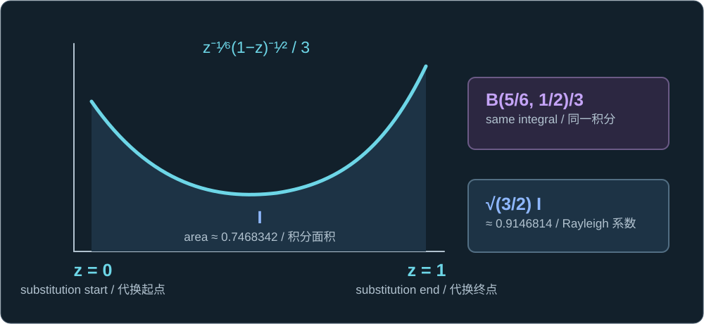
The shaded dimensionless area I is B(5/6,1/2)/3≈0.7468342; multiplying by √(3/2) gives 0.9146814. The schematic curve is truncated near its integrable endpoint singularities.
图中的无量纲阴影面积 I 等于 B(5/6,1/2)/3≈0.7468342；乘以 √(3/2) 得到 0.9146814。示意曲线在两端可积的奇异点附近截断。
The coefficient is therefore a consequence of the spherical, incompressible, constant-pressure model and its initial condition, not an empirical fit. Substituting it into the time expression yields:
因此，该系数来自球对称、不可压缩、压差恒定模型及其初始条件，并非经验拟合。将它代入时间表达式可得：
tc ≈ 0.915 Rmax√(ρ/Δp)
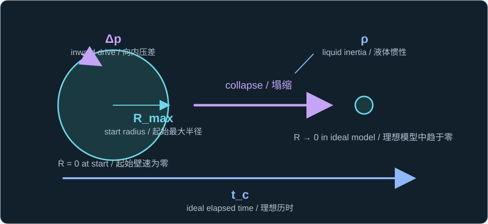
The cavity starts at maximum radius R_max; pressure gap Δp drives collapse against liquid density ρ, and t_c measures the ideal elapsed time.
空腔从最大半径 R_max 开始；压力差 Δp 克服密度为 ρ 的液体惯性驱动塌缩，t_c 表示理想历时。
At the same pressure gap and liquid density, doubling Rmax doubles this ideal time. A stronger inward pressure gap shortens it according to an inverse square root. The formula is a benchmark for judging the order of magnitude of a measured collapse time; it is not a complete model of a gas-containing bubble.
在压力差与液体密度不变时，Rmax 加倍会使这一理想时间加倍。更大的向内压力差则按平方根的倒数缩短时间。该公式可作为判断实测塌缩时间数量级的基准，但不是含气气泡的完整模型。
The ideal equation drives the radius all the way to zero and predicts an unbounded wall speed there. Real gas pressure, liquid compressibility, heat and mass transfer, and possible loss of spherical shape intervene before that limit. A real bubble may rebound or form a jet instead.
理想方程使半径一直缩小到零，并在该处给出无界的壁面速度。实际气体压力、液体可压缩性、传热传质，以及可能出现的非球形变化，都会在到达这一极限前发挥作用。真实气泡也可能回弹或形成射流。
Later, we will study cavitation jet formation, direction, and impact in depth.
后续课程将深入学习空化射流的形成、方向和冲击作用。
One check
一道检查题
Two ideal cavities have the same Rmax and liquid density, but the second has four times the inward pressure gap Δp. How do its collapse time and the coefficient 0.915 compare with the first, and why?
两个理想空腔具有相同的 Rmax 和液体密度，但第二个的向内压力差 Δp 是第一个的四倍。它的塌缩时间和系数 0.915 与第一个相比如何变化？为什么？